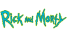

<header>
  
  <nav class="menu">
    <ul>
      <li [routerLink]="['/']" routerLinkActive="active" [routerLinkActiveOptions]="{exact: true}">
        <mat-icon fontIcon="home"></mat-icon>
        <p>Início</p>
      </li>
      <li [routerLink]="['/favorites']" routerLinkActive="active" [routerLinkActiveOptions]="{exact: true}">
        <mat-icon fontIcon="favorite"></mat-icon>
        <p>Favoritos</p>
        <span>{{counterFavorites}}</span>
      </li>
    </ul>
  </nav>
</header>